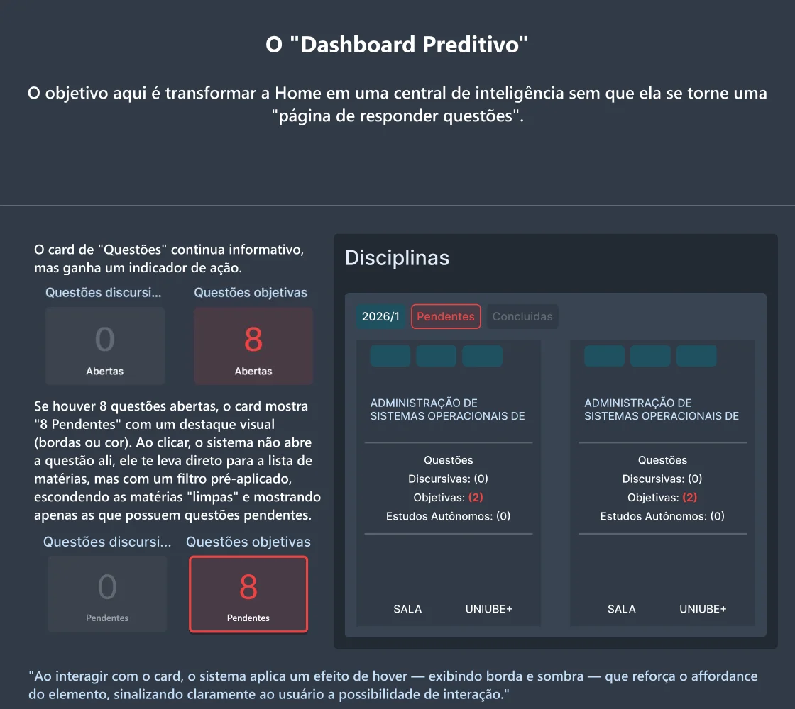
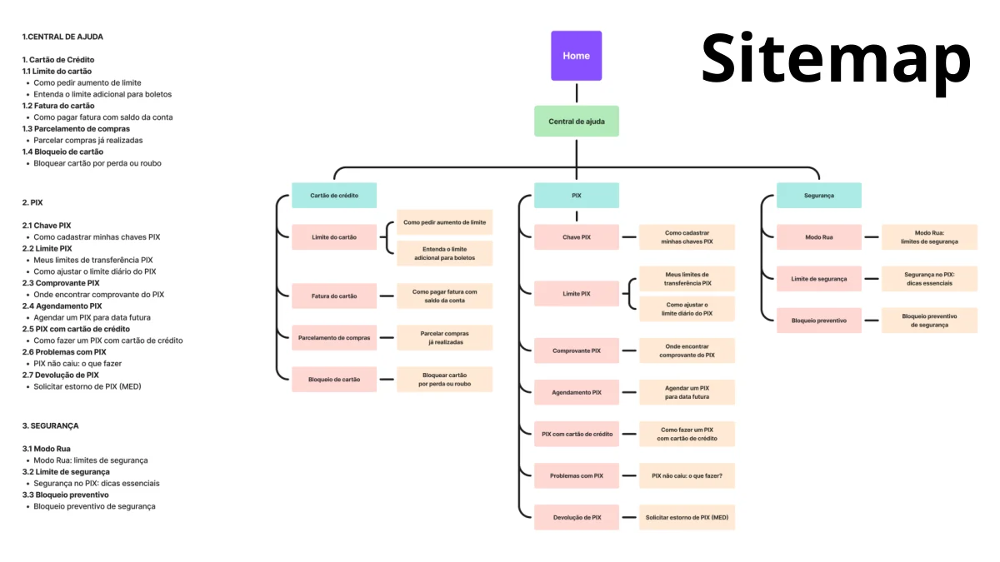
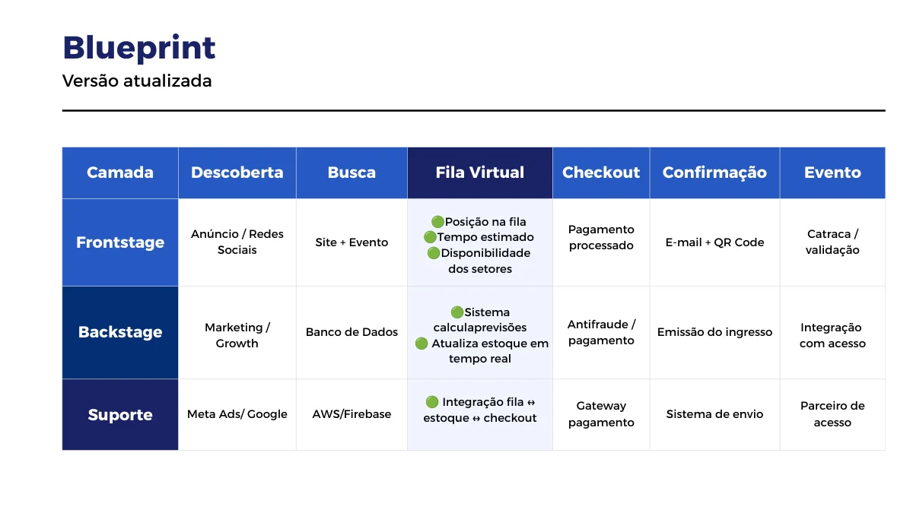
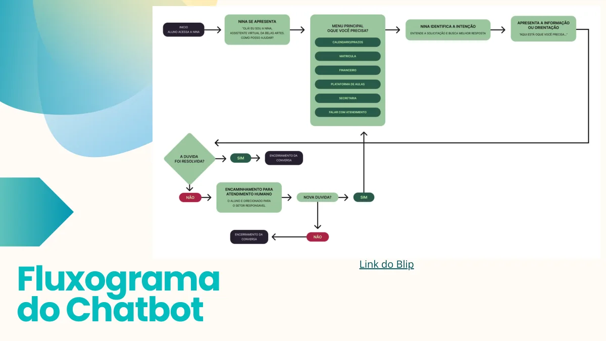
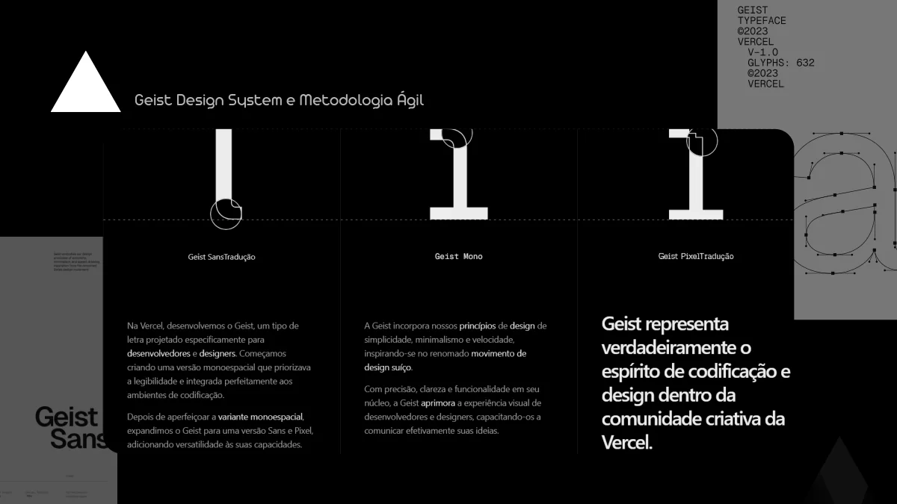
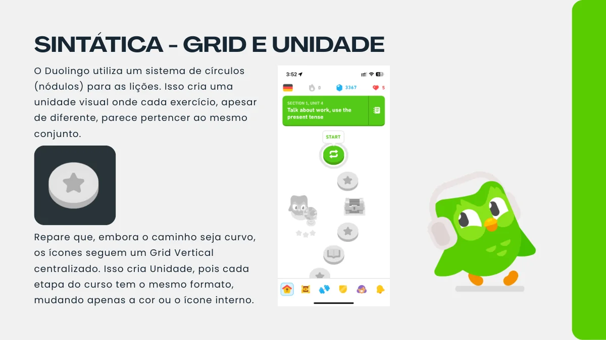
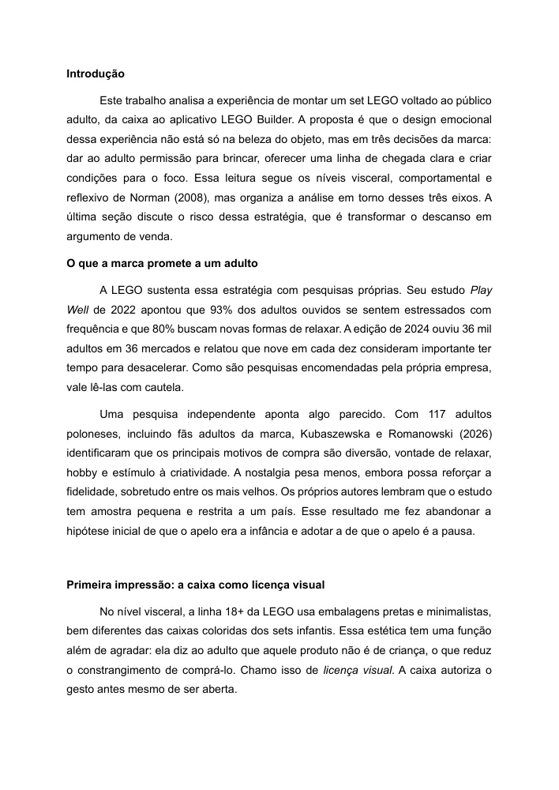
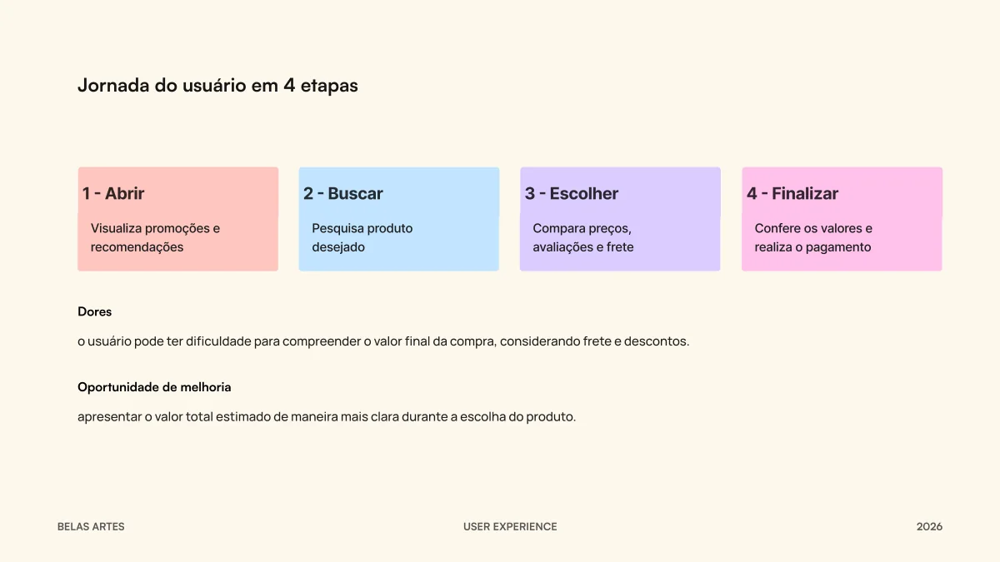

AVA Uniube
Uma experiência acadêmica com menos etapas e mais clareza.
↗Sou Vitor Figueiredo. Investigo o comportamento humano para projetar experiências digitais mais claras, úteis e conscientes.
Explore meu trabalhoO meu campo de trabalho
Da interface ao comportamento: explore os trabalhos por perspectiva ou encontre um tema que desperte sua curiosidade.
10 trabalhos

Uma experiência acadêmica com menos etapas e mais clareza.
↗
Reorganização de conteúdos para situações em que encontrar uma resposta importa.
↗
Previsibilidade na compra de ingressos para grandes eventos.
↗
Autoatendimento conversacional para a comunidade da Belas Artes.
↗
Como consistência visual e design engineering se complementam.
↗
Uma leitura da interface pela sintática, semântica e pragmática.
↗
Design emocional e o ritual de pausa para adultos.
↗
Como promoções e custos percebidos influenciam a decisão de compra.
↗
Investigação dos significados da marca para consumidores não atletas.
↗
Aversão à perda e métricas de UX em processos de cancelamento digital.
↗Tente outro termo ou limpe os filtros.
Pesquisa científica
Manuscrito acadêmicoAversão à perda e métricas de UX em processos de cancelamento digital. Uma investigação sobre autonomia, compreensão e desempenho do usuário.
Ler sobre a pesquisa →Minha trajetória
Sou formado em Análise e Desenvolvimento de Sistemas pela Uniube e curso pós-graduação em User Experience no Centro Universitário Belas Artes de São Paulo.
Atuei como Desenvolvedor Frontend e UI/UX na Uniube, equilibrando decisões de design com as restrições de implementação. Meu trabalho conecta arquitetura da informação, comportamento, usabilidade e desenvolvimento de interfaces.
Universidade de Uberaba · Uniube
Centro Universitário Belas Artes de São Paulo
Pesquisa, design e implementação
Repertório
Personas · Jornada do usuário · Etnografia · Métricas de UX · Arquitetura da informação
Figma · UI/UX · Design Systems · UX Writing · Service Design · Prototipagem
HTML · CSS · JavaScript · ReactJS · PHP · Tailwind CSS